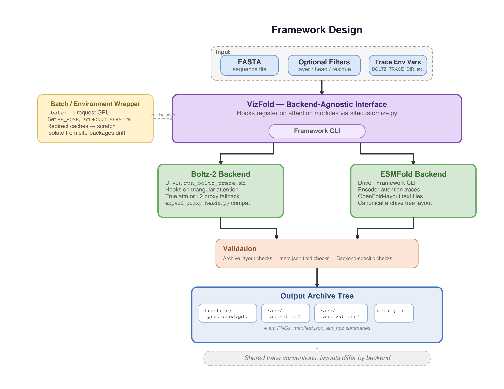

Composable infrastructure for protein structure prediction, tracing, and interpretability on HPC systems.
Supporting ESMFold, Boltz-2, intermediate representation extraction, and reproducible deployment workflows.
VizFold is a research initiative aimed at developing advanced visualization and interpretability techniques for AlphaFold and similar protein folding models. Our work bridges computational science and biology to enhance understanding of protein folding mechanisms.
Capture and analyze model attention patterns across protein sequences.
Expose embeddings, pair representations, and internal model states for analysis.
Generate arc-diagram views for long-range residue relationships.
Support reproducible execution across cluster and high-performance environments.
VizFold separates model execution, representation extraction, visualization, and HPC deployment into composable workflow components.

Fast protein structure prediction with support for representation tracing.
Modern structure prediction backend integrated into reproducible workflows.
Deployment patterns for running prediction and analysis pipelines on clusters.
Presented at PEARC 2026
VizFold introduces a modular infrastructure for running protein structure prediction workflows, extracting intermediate representations, and supporting interpretability analysis on HPC systems.
Dr. Giri Krishnan - PI, Georgia Tech
Dr. Polo Chau - Co-PI, Georgia Tech
Dr. Tyler Hayes Georgia Tech
Suresh Marru Georgia Tech
We welcome researchers, developers, and contributors! Check out our GitHub repository for ways to get involved.